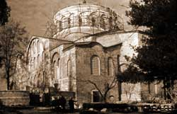
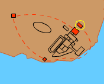

Hagia Eirene
This was built by the Emperor Constantius II and stood next to the church of Hagia Sophia. Both the churches were burnt down in AD 532 and were rebuilt by Justinian. However, Hagia Eirene burnt down again and had to be rebuilt in the eighth century during the period of Iconoclasm.



Hagia Eirene
